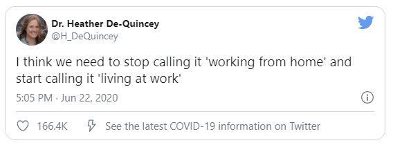

What does it feel like to work from home?
As you know it, working in an office can get pretty wearing. But it would be wrong to assume that working at home is not, for it is not a cakewalk either.
It takes serious concentration to work a full-time job from an unconventional space. Your attention can drift apart, all the time.
You might start having some irrelevant thoughts, out of the blue. However, this is not something to worry about. Cut yourself some slack. It is absolutely okay to take your mind off work for a few minutes, intentionally or not.
You need not beat yourself up for that.
Oftentimes, it is seen that when people go into full-on work mode, eventually they get absorbed in their work in a way that they lose touch with the outside world.
Being hardworking is one thing and stressing out is completely another.
Be it for meeting deadlines or finishing the piled work, the main mantra is taking it easy. Stressing out can pose a mild threat to both your mind and body. Your thinking capacity is slowed down because your brain cannot process properly, in stress & anxiety.
Balance your efficiency with self-care if you are not mentally well, you cannot give your best. There might be a lot of work to do in a short schedule or maybe some previous work is left undone.
For this, you have to know how to manage your time and set achievable targets**. Do not take on responsibilities if you cannot accomplish them in the stipulated time.
Adding too much on the plate can make things hard. All you require is to:
So Relax & Chill!